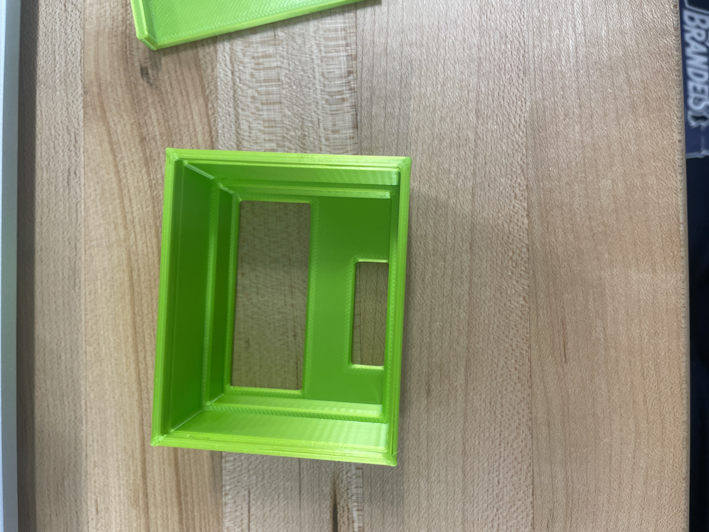
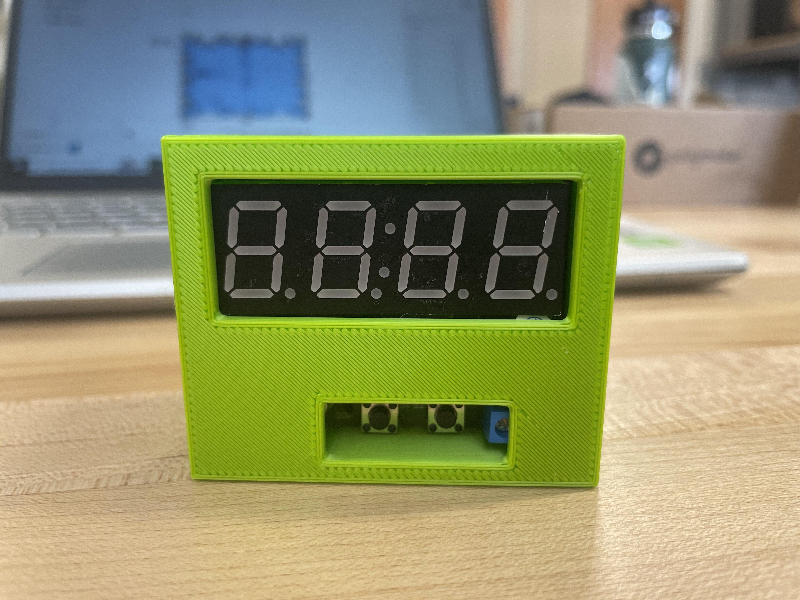
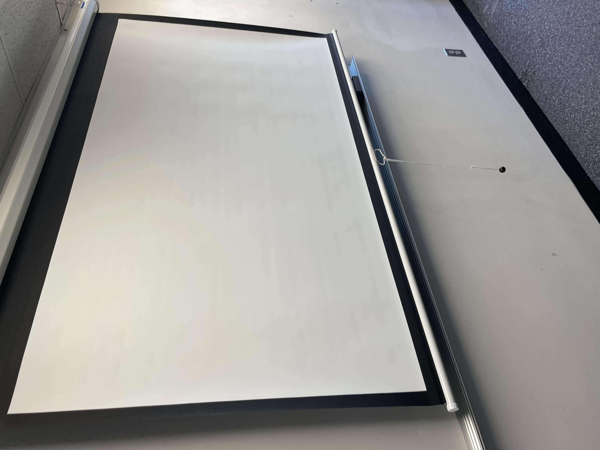

Project Prusa Slicer software and the Prusa MINI+ printer
The first print is a 3D print of my name, Daniel Shemesh, as a name tag.

Second 3D Print: Calibration Test
The second 3D print is designed to push the limits of the machine. I chose to print out a rifleman rfl-8d, which is also known as a computer game character. The issue I saw with this print was that the arms were too long—more than a 45-degree angle.


Post reflection
Coming to ENGR 11A, I was very excited to learn how to 3D print and design different objects. In the nametag project, I had much fun creating my first-ever 3D print and succeeding on my very first try. On the other hand, the second print was more complicated. I did many tries but still haven’t succeeded in finding a print that will meet the requirements perfectly. In the end, I found an action figure-looking print that became my final project. One of my future goals is to become an entrepreneur, creating products that solve problems and make the world a better place. This class has exceeded my expectations, and I feel like I’m getting closer to my dream.
Project 3: Alarm Clock Holder
Post reflection Project 3 - Coming into this project, I was very excited about the idea of building an alarm clock for the first time in my life! I felt that this would be one of the most exciting projects we did so far. Throughout the process, I experienced both challenges and successes, but I am proud to have completed it in the end. During this project I worked with my teammate, Charlie. We were working very efficiently together, and I really enjoyed working with him. We worked well together, and it made the project feel much more manageable. The most difficult part was the design phase, particularly using Fusion 360. The software presents a steep learning curve, but I found that overcoming these challenges helped me build my skills further. ENGR 11A class keeps surprising me. The work is not easy but the end result is very rewarding and gives me a sense of accomplishment.
Soldering an alarm clock
Soldering an alarm clock was a very interesting experience. As someone doing it for the first time, I really find it satisfying to solder.
Alarm clock holder
This part of the project was a bit tricky since our first print had one false measurement (the side was too short), so we had to redo the sketch. At last, we got our final product!


Alarm clock holder Designing
In This step we we had to take mesurments of all the mesures of the alarm clock and na=batterie case for getting the specific detailes for a perfect design.

Laser cutting
This faze was very hard we had to figure out how to build our sketch from zero and make it in a dxf format for the laser cutting. one of our biggest challanges was understanding simple principles of working with fusion like mirroing or parrallel figurs. With the help of our Proffesor and TA's we have succeded to create out first laser cutted Alarm Clock Holder!!!

Unfortunately our first laser cut was not succesgull interms of size: It was just too small to fit.
Laser cutting Final cut number 2
Laser cutting 2 - IN This step we decided to take a diffrent approach. Instead of recreating the whole sketch we decided to adjust by 103 % the size of the holder and it succefully worked.
Project 4: 3D-Printed e-NABLE Prosthesis
In this project I used Mini perusal plus 3D printer, PLA filament. Used Perusa slicer for editing and slicing the 3D print. I used the design of thee-ENABLE Phoenix Hand v3 prosthetic hand (taken from e-NABLEhub-RecommendedDevices) at 150% scale. Also we used a hitting toll to heat the part of the wrist of the print so it will have a special curve that fits an arm. Moreover we connected all the parts together with a special kit we got that contained screws, cable, plastic finger covers and rubber bands.
During this process we faced as a team many challenges. Some of the challenges were logistic problems such as finding a printer to print since so many groups had a lot of prints to print. On the other hand we faced some difficulties with 150% scale which made the screws that are supposed to go inside the arm supporters too small for it to fit so they were completely loose. We did find a solution which is not perfect but it works: we set up the cable holders on the side and then fit them in so they are holding on to both sides of the print and do not slide out.
We reviewed two different types of documentation; videos and written manuals. While reviewing we started with the written manual as we thought it would be faster and more efficient than watching the video since it was 36 minutes. After starting to read the manual we understood it would be much easier to watch the video since the video explains and shows a physical example of what we should do. I would suggest for the current documentation to add specific time frames to each step of the video that way we could be more time efficient and skip to the next step we need to complete.
Final Design
For the final design we reprinted the distals print to 120% so now the screws fit perfectly and the prohestetic hand functions well!!!
Design Modifications
A modification I would like to add is adding a fingerprint (gel) on the primary finger so the user will have a finger that he uses to log into his phone, computer, ect.
Ethics and Design Reflection
One of my life aspirations other than becoming monumentally successful is to help people and make the world a better place. The fulfillment and the satisfactions of making a person feel when creating such a product that completely changes the way he lives his life and improves it for the better is my reason and drive for becoming successful. My personal connection to the topic of “Disability” is very meaningful as my mom was considered disabled for quite a while. This made me aspire to complete this project on the best side possible and I feel like I did so.
In the book WHO IS THE BUILT WORLD BUILT FOR? (ALBERT CAMUS) they talk about Mike and his arms disability/
“ Mike [...] on his right and wears a prosthetic arm as its match on the left: a forearm, wrist, and hand sheathed in a semi transparent hard plastic housing, pearly gray and smooth and contoured in the shape of a recognizable arm and hand, with each finger articulated as though in a full-length glove.” Mike’s story made me feel empathy and solidarity towards people with arm disabilities and body disabilities in general.
Bibliography
NIH3DPrintExchange: https://3d.nih.gov/collections/prosthetics
e-NABLEhub-RecommendedDevices: https://hub.e-nable.org/p/devices
Thekit weare using for parts: https://shop3duniverse.com/products/phoenix-hand-by-e-nable-assembly-materials-kit#v32622587858
Book: WHO IS THE BUILT WORLD BUILT FOR? (ALBERT CAMUS)
Scavenger Hunt!!!
Description of goes here...
1. Evidence of design for navigation without one or more of the 5 senses
In the picture below we can see a navigation sign on a door that that underneeth it there is the navigation for the blind written in Braille language. This navigation sign allows blind people to navigate without using their eyesight. Also this navigation sign allows deaf people to use their eyesight and navigae.
2. Evidence of design for forms of assistance
As seen in the photo there is a blue colored, wheel chare elivator (lift) that is made specifically for people with need that there are either in a wheel chair or other transportation needs. This design can be life changing as people that could not go up stairs now can.
3. Evidence of design for aging, broadly defined
In the photo we can see stairs with a side banister that is designed for people that have access walking problems.This specifically design lets the person with the dissability to hang on it while walking down or up the stairs. This desin especially recognizes with seniors that use it often.

4. Evidence of design for young children
As you can see this specific design of a water fountain was specifically designed for Accessibility for children. This water fountain has two heights, one for adults and another one deisgned especialy for children access.
5. Evidence of design for wheeled mobile gear


6. Evidence of design with physical barriers
In the photo we can see there is a staircase that is design with physical barrier: there is no access for wheelchairs nor for wheeld mobile geer such as carts, bikes and more. This shows us that the designers of this stairs did not pay attention to the needs of all diffrent people.
7. Evidence of design with a lack of information
This photo was taken just outside the engineering lab. Till this moment we do not know what is this designed for. In my opinion it has somthing to do with the elivatior since it is right by it.
8. Evidence of design with an absence of help
9. Evidence of design for historical specificity
In the photo we can see a historical a shofar. A shofar is a traditional Jewish instrument made from a ram's horn, typically used during religious ceremonies and celebrations. The Shofar is designed this way as it can make a specific sound for the jewish ceremonies.

10. Evidence of design for environmental sustainability

11. Evidence of design for health and well-being
This Photo was taken in the science building near Abelson 131. In the photo we can see a emergency shower that incase of an emergency It’s designed to quickly rinse off any harmful substances that may come into contact with a person's skin or clothing, helping to prevent injury or chemical burns. In an emergency, a person can stand under the shower and pull a handle, releasing a large flow of water to wash off contaminants.
12. Evidence of design for Transportation